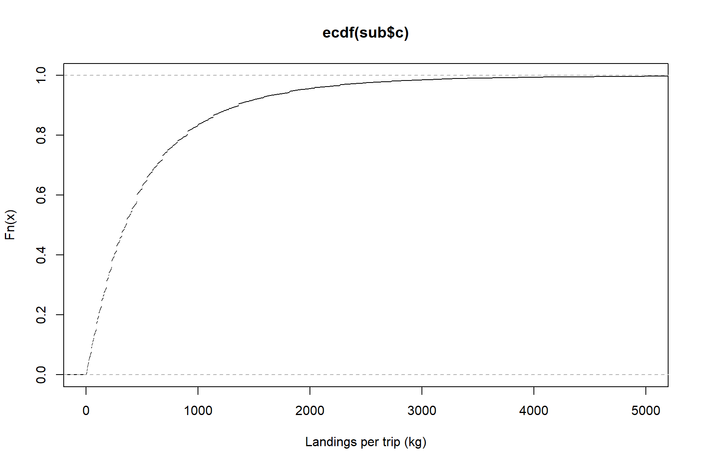

Landings: FAQ
2022-11-25
1 SET-UP
1.1 settings
source('0.0_settings.R')1.2 load all data
load(paste0(dir.rdat, "ziff.Rdata"))2 How much do gillnets and handlines/jiggers usually land?
Helpful to determine catch allowed to keep for sample collection.
year <- 2011:2021
# subset for years
sub <- ziff[ziff$year %in% year,]
# subset for gears
sub$gear.cat2 <- substr(sub$gear.cat,1,2)
sub <- sub[sub$gear.cat2 %in% c('GN','LH'),]2.1 TABLES AND PLOTS
2.1.1 Table
sub$c <- round(sub$catch,0)
df <- data.frame(catch=seq(0,1000,100))
df$perc <- round(ecdf(sub$c)(df$catch)*100,0)
kable(df,digits=0,row.names = FALSE, caption='Percentage of landings equal to or lower than indicated')| catch | perc |
|---|---|
| 0 | 0 |
| 100 | 19 |
| 200 | 33 |
| 300 | 46 |
| 400 | 54 |
| 500 | 63 |
| 600 | 69 |
| 700 | 74 |
| 800 | 77 |
| 900 | 80 |
| 1000 | 84 |
2.1.2 boxplot overall
ggplot(sub,aes(x=gear.cat2,y=catch,fill=as.factor(year)))+
geom_boxplot()+
scale_y_log10()+
labs(y='Landings per trip (kg)',x='Gear categorie',fill='Year')
## Warning: Removed 796 rows containing non-finite values (stat_boxplot).
2.1.3 boxplot by region
ggplot(sub[sub$prov.land!='NL',],aes(x=gear.cat2,y=catch,fill=as.factor(year)))+
geom_boxplot()+
scale_y_log10()+
labs(y='Landings per trip (kg)',x='Gear categorie',fill='Year')+
facet_wrap(~prov.land)
## Warning: Removed 793 rows containing non-finite values (stat_boxplot).
2.1.4 ecdf
plot(ecdf(sub$c),xlim=c(0,5000),xlab="Landings per trip (kg)")